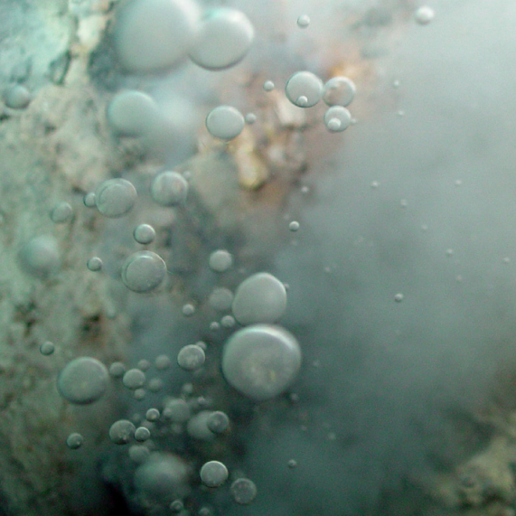
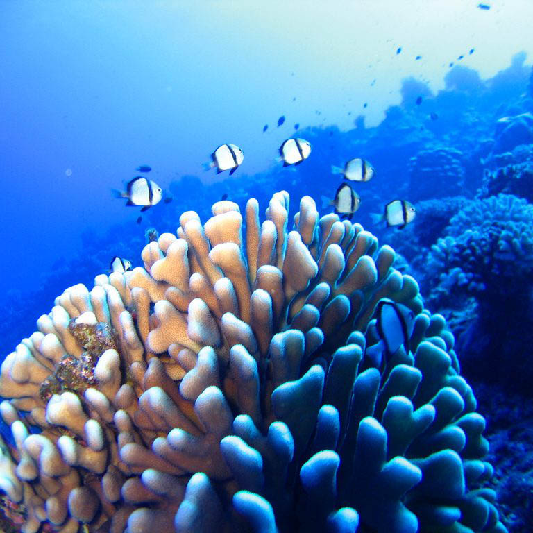
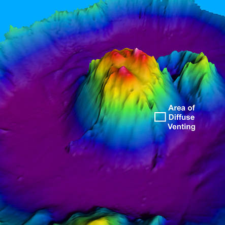

Marianas Trench Marine National Monument
Objects of Scientific Interest
President George W. Bush established the monument under the authority of the Antiquities Act of 1906, which protects places of historic or scientific significance. Only recently have scientists visited the realm of the monument, observing previously unknown biological, chemical, and geological wonders of nature.
The Units
The Volcanic Unit – an arc of undersea mud volcanoes and thermal vents – supports unusual life forms in some of the harshest conditions imaginable. Here species survive in the midst of hydrothermal vents that produce highly acidic and boiling water.
The Champagne vent, found at the NW Eifuku volcano, produces almost pure liquid carbon dioxide, one of only two known sites in the world. A pool of liquid sulfur at the Daikoku submarine volcano is unique in all the world. The only other known location of molten sulfur is on Io, a moon of the planet of Jupiter.
In the Islands Unit, unique reef habitats support marine biological communities dependent on basalt rock foundations, unlike those throughout the remainder of the Pacific. These reefs and waters are among the most biologically diverse in the Western Pacific and include the greatest diversity of seamount and hydrothermal vent life yet discovered. They also contain one of the most diverse collections of stony corals in the Western Pacific, including more than 300 species, higher than any other U.S. reef area.
Caldera at Maug
The submerged caldera at Maug is one of only a few known places in the world where photosynthetic and chemosynthetic communities of life co-exist. The caldera is some 1.5 miles wide and 820 feet deep, an unusual depth for lagoons. The lava dome in the center of the crater rises to within 65 feet of the surface. Hydrothermal vents at about 475 feet in depth along the northeast side of the dome spew acidic water at scalding temperatures near the coral reef that quickly ascends to the sea surface. Thus, coral reefs and microbial mats are spared much of the impact of these plumes and are growing nearby, complete with thriving tropical fish. As ocean acidification increases across the Earth, this caldera offers scientists an opportunity to look into the future and ensure continuation of coral reef communities.
The coral reef ecosystems within the Islands Unit have high numbers of apex predators, larger than anywhere else along the Mariana Archipelago. One site has the highest density of sharks anywhere in the Pacific, even higher than those of the remote islands of the Central Pacific.
Similarly, these northern islands have the highest large fish biomass in the Mariana Islands. The rare bumphead parrotfish – the largest parrotfish species – thrives in these waters. The species has been depleted throughout much of its range and is included on the IUCN Red List of Threatened Species.